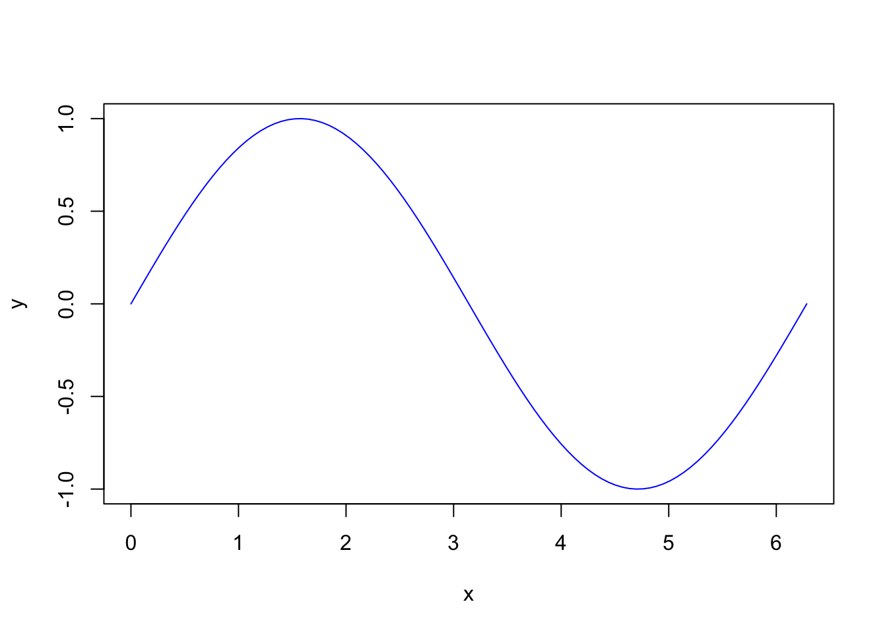

Chapter 4 Introduction
4.1 A.Motivation
Consider a general ODE:
\[ \begin{cases} \mathbf{\dot{x}}(t) = \mathbf{b}(x(t))\quad (t>0)\\ \mathbf{x}(0) = x_0, \end{cases} \]
knitr::opts_chunk$set(echo = TRUE)
x = seq(0,2*pi,length.out=100)
y = sin(x)
plot(x,y,type="l",col="blue")
with the trajectory:
But in real life we always have measured trajectories of systems like this:
So consider a formal way to modify the ode with “white noise”:
\[ \begin{cases} \mathbf{\dot{X}}(t)=\mathbf{b}(\mathbf{X}(t))+\mathbf{B}(\mathbf{X}(t))\xi(t)\quad t>0 \\ \mathbf{X}(0)=x_{0}, \end{cases} \] where \(\mathbf{B}:\mathbb{R} \to \mathbb{M}^{n\times m}\) and \(\xi(\cdot):=m\)-dimensional “white noise”
But now we surface several Mathematical Problems:
- Rigorously define “white noise” \(\xi(\cdot)\);
- “Define what it means for \(\mathbf{X}(\cdot)\) to solve this sde.”
- the Existence, Uniqueness, and Asymptotic behavior of the solution of this sde.
4.2 B.Heuristics
With no strict explanation we define: \[\mathbf{\dot{W}}(\cdot)=\xi(\cdot),\] which means that “the white noise is the time derivative of Wiener process”
Then, we have \[ \frac{\mathrm{d}\mathbf{X}(t)}{\mathrm{d}t}=\mathbf{b}(\mathbf{X}(t))+\mathbf{B}(\mathbf{X}(t))\frac{\mathrm{d}{\mathbf{\dot{W}}(t)}}{\mathrm{d}t}, \] \[ {\bf X}(t)=x_{0}+\int_{0}^{t}{\bf b}({\bf X}(s))\,d s+\int_{0}^{t}{\bf B}({\bf X}(s))\,d{\bf W}, t>0 \]
Now we must:
- Construct \({\mathbf{W}(\cdot)}\) -> Chapter 3;
- Define the integral \(\int_{0}^t \dots\,\mathrm{d}\mathbf{W}\)-> Chapter 4;
- Show 2. has a solution, etc. -> Chapter 5.
Then we still have some Physical/Modeling Problems:
- The true model of physical situation;
- \(\xi(\cdot)\) the really white noise?